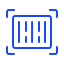

Сухопутная логистика. Контейнеры
Центр ценовых индексов (ЦЦИ) – российское ценовое агентство. Оперативно публикуем цены на товары российского экспорта и логистику.
 Сухопутная логистика. Контейнеры
Котировки
15.07.2025
Контейнерный рынок ускорил падение и в объёмах, и в ставках
- Слабая активность импортёров продолжает корректировать тарифы на грузоперевозки из Китая вниз: в начале июля стоимость доставки 40-футовых контейнеров прямыми железнодорожными сервисами из Сианя в Москву упала ниже 3,2 тыс. долл., из Шанхая – ниже 4,0 тыс. долл.
- По итогам июня по сети РЖД перевезено 592 тыс. гружёных и порожних контейнеров ДФЭ (-8,7% г/г) – минимальный месячный показатель за последние два года. Перевозки в импортном сообщении упали на 17% г/г, в экспортном – выросли на 9% г/г.
- Ставки аренды 80-футовых фитинговых платформ снизились в июле на 11% до 2,3 тыс. руб./сут. без НДС, при этом доходность оперирования ими оценивается рынком ещё ниже.
- Субсидии российским грузоотправителям за возврат контейнеров из Москвы, Санкт-Петербурга, Новосибирска и Екатеринбурга в Китай опустились ниже 500 долл.
16.06.2025
Ставки на контейнерные поезда из КНР обновляют новые минимумы
- В отличие от резкого роста спотовых ставок фрахта на контейнерные перевозки из Китая в США и Европу, ставки на перевозку контейнеров из Китая в Россию продолжают снижаться из-за слабого спроса.
- В мае по сети РЖД перевезено 630 тыс. ДФЭ (-6% г/г). За последние 10 лет столь сильное падение объёмов железнодорожных контейнерных перевозок фиксировалось лишь однажды: весной 2022 г.
- Среднесуточные лизинговые платежи за фитинговые платформы снижаются вместе с ценами российских вагоностроителей и ключевой ставкой Банка России, однако они остаются в 1,5-2 раза выше ставок аренды.
15.05.2025
Контейнерный рынок переходит в режим ожидания
- Ставки на мультимодальные сквозные сервисы по доставке контейнеров из Китая в Москву через порты Дальнего Востока снижаются на 15% к ценам апреля; ставки на прямые поезда из Китая в Москву впервые в 2025 г. перешли к сдержанному росту.
- Российские экспортёры теряют скидки к железнодорожному фрахту при аренде контейнерного оборудования: субсидии за пользование 40-футовым контейнером на маршруте Москва порты КНР снизились в мае до 620 долл., на маршруте Новосибирск – порты КНР – до 490 долл.
- Падение объёмов контейнерных перевозок, улучшение эксплуатационной обстановки на сети РЖД и рост производства фитинговых платформ привели к снижению ставок их аренды. Майские индикативы: 1,65 тыс. руб. без НДС за 40-футовую платформу, 2,7 тыс. руб. без НДС за 80-футовую платформу.
15.04.2025
Контейнерам не хватает китайских грузов
- Индексы цен на перевозку контейнеров со станций Китая в Москву в прямом железнодорожном сообщении теряют в начале апреля 250-400 долл. к ценам марта на фоне избытка провозных мощностей и недостаточного спроса со стороны импортёров.
- Жёсткое лимитирование на отправки контейнеров в адрес Дальневосточного полигона привело к росту ставок на перевозки по маршруту Москва – Владивосток до более чем 350 тыс. руб. за 40-футовый контейнер.
- Выпуск контейнеров в КНР в 2024 г. обновил исторический рекорд (8,1 млн ДФЭ), а цены на них перешли к коррекции: в апреле стоимость 20’DC у китайских производителей стартует от 2,2 тыс. долл., 40’HC – от 3,0 тыс. долл.
- По итогам 1 кв. 2025 г. перевозки контейнеров по сети РЖД в экспортном сообщении превысили импортные перевозки.
17.03.2025
Март - для импортёров фарт
- За последний месяц ставки на прямые ускоренные контейнерные поезда из Китая в Россию упали более чем на четверть и обновили минимум последних трёх лет. Железнодорожный транспорт – не только самый быстрый, но и самый бюджетный способ доставки контейнеров из КНР: FOR Шанхай – FOR Москва (40’HC COC) = 4,8 тыс. долл.
- Падение объёмов импорта корректирует вниз ставки выдачи контейнеров в Китае и снижает доплаты российским грузоотправителям при аренде контейнеров для экспортных перевозок. Субсидии за пользование 40-футовыми контейнерами на маршруте Иркутск – города КНР впервые за последние полгода сменились необходимостью платы владельцу тары.
- Ставки аренды 80-фут. фитинговых платформ держатся на уровне 2,73 тыс. руб./ваг.-сут. без НДС.
Стоимость железнодорожной контейнерной перевозки
Примечание: стоимость железнодорожной контейнерной перевозки определяется как ставка на перевозку 40-футового контейнера собственности перевозчика (COC) по маршруту CY Москва – FOR Новосибирск. Этот маршрут является одним из самых востребованных во внутрироссийском сообщении. Источник – ежемесячные отчёты ЦЦИ «Сухопутная контейнерная логистика». Полный список публикуемых ставок доступен в Спецификации ставок сухопутной логистики.
События
7 февраля 2025. Пятница с Центром ценовых индексов. Логистика